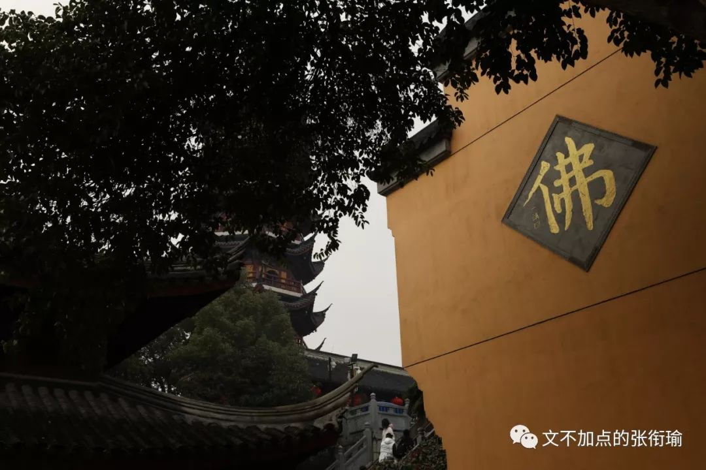
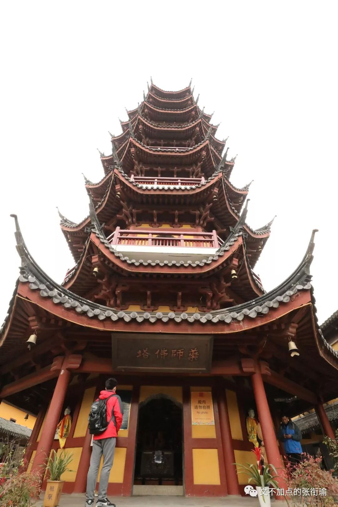
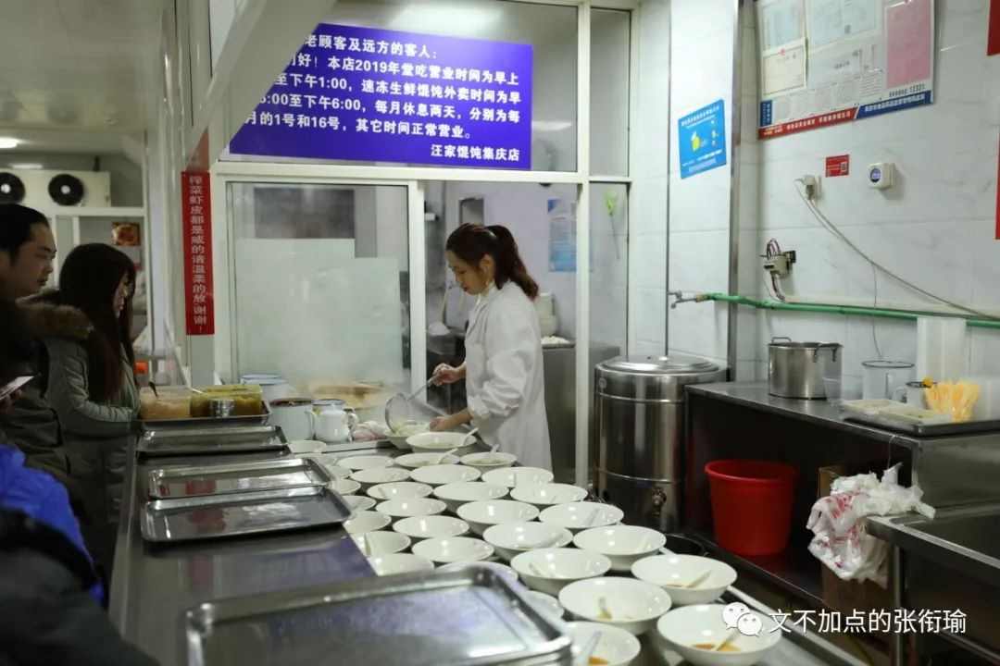
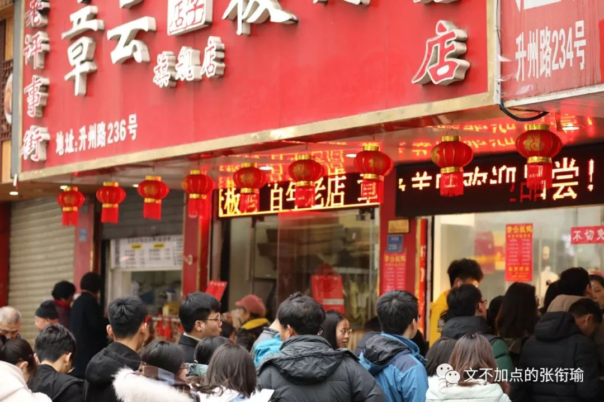
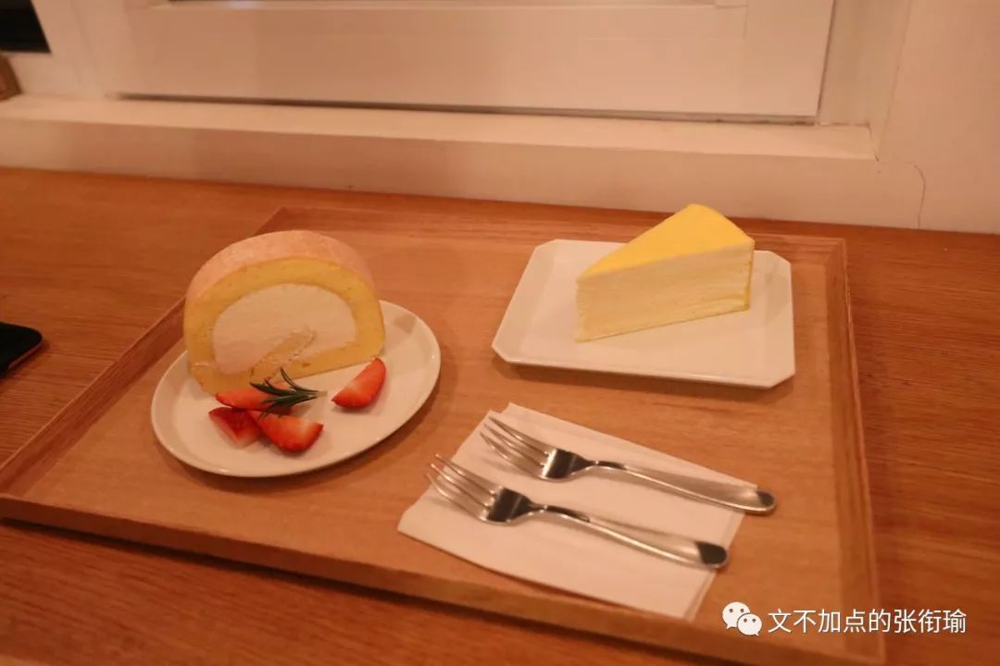
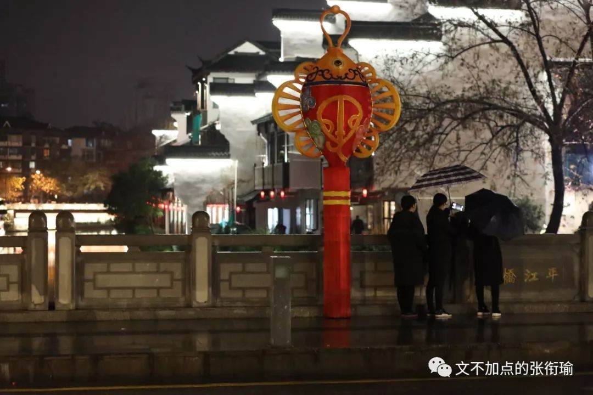

南京是毕业旅行种草榜上，排列最靠前的三个城市之一。襄阳第一个去，然后就是南京了。想去南京，倒也没有很多原因。建邺、江宁、金陵、南京，这些都曾在一段时间内用以指代我们现在地理上所说的南京这座城市。即便是现在，去过了之后在寝室里写游记，第一个想到的也还是南京大学做的理论化学计算和傅献彩编撰的《物理化学》，然后是和朋友打趣说那里不是琼瑶笔下何书桓的老家么kkk
所以说为什么会要去南京？其实说不太上来。淮扬菜和我吃得不少的南京大牌档算一部分、知道历史上有南京大屠杀算一部分、以及知道红楼梦里金陵十二钗也算一部分。大脑的函数不显含参地一股脑将生活纳入，然后萌生了会要去南京的想法。很多时候人们所谓的无名念想，也许是随缘出现的、像生成了一个随机数，但从心理学和社会学的人那里看来，也许又有符合事件解释的逻辑在。
你大可以说这种感觉，是直觉。可我也同样看重直觉之后的执行力。纠结也可以被解释为过度用脑，尤其在小事上。论述行为正当。
前几天摘抄了一段话——“做自己”在我身上就代表“立刻执行自我满足”这一指令。如果我总把时间与思考浪费在这样结果如何都对自己影响其实并不大的事情上，会丧失掉很多东西。于是，当想做什么，并且有能力有时间有财力做成，且结果对自己影响并不大的手，就会立刻去做，满足自己的及时的小小欲望或需求。
那么，去南京。就是这么一件事。其实当开始反省每一件事情的时候，思考就注定不会停止。思考我是如何进行直觉和直觉下执行力这件事，也是思考。只是一次想过之后，可以在今后经历类似事件的时候，直接调取原先思考过的成果，像封装好的程序、又像高中生检查试卷中的一道题。
出发所拍的第一组照片，来自在武汉站等车的时候，随手拍的路人。迷惑的发型，和看手机的高铁站老人。
顺手说返程。那就到了春运次日，在动车里本来只想拍箱子的。后来人也入镜了。终到汉口站。对面的绿皮火车上，赶着春运的人们在列车上攀谈、进食、调换座位、相互打量。
抵达南京之后，在地铁站内面对玻璃又开心地自拍。地铁经过，我看上去就像是一个造型诡异的人、被流光削去了头颅、别在腰间变成了小河马。
南京的地铁感觉比我在国内去过的其他城市都要宽阔一些？至少比武汉要宽。关于南京市公共交通，一会还会再提到。
出门第一站，到达鸡鸣寺。寺外的古生物博物馆旁，路人正向着有趣的横幅走去。
如果下联会唱出来的话，请反思一下自己看过的影视作品。据说鸡鸣寺是首刹，而现在已经变成据传求姻缘很灵的一个寺庙。
药师塔似乎也是一处很重要的地方。说上到多少层分别会如何地实现愿望。真好。这句真好不仅仅指这样的说法很有幻想和浪漫的色彩，同时觉得能对这些事情深信不疑并且抱有企盼的那些人，真的很好。
人们在生活中苦苦挣扎，不断寻找着生活可能开始变好或者总有一天会变好的证据。即便这种证据没有，也会想办法让自己相信这一切终将会好起来。同样是我去南京的一个动机在于，有一位南京市民曾经问，这个世界会好吗？也许青灯古佛会有答案。
从鸡鸣寺出来便去了紫金山天文台。滴滴司机直接开着麻石盘山公路送我们上山，也许是雨花石也说不定。一边道谢说司机开山路挺费油的而里程又是一样，司机摆摆手说“挺好的送你们上来，因为我自己也没来过。”怂恿了一下要不要停止工作然后也进来玩一圈再把我们送下山，师傅笑了笑然后自己下山了去。
总是在其他地方看到，某某行星以谁的名字命名。当其他同龄人还在为了自己的全世界奋斗的时候，有人已经以自己的名字命名了一颗星星。而中国的这些，署名总在南京紫金山天文台。写到这就想到刚刚又看到的南院士怀念文章。在天文台的时候也想到了。以及想到了19年9月底在木兰草原看到的三颗流星。
当然白天看天也不错。朋友衣服的颜色也很显眼。虽然头顶有蓝天，但是在可以远眺俯瞰整个玄武湖的紫金山，却因为云雾和不能用相机记录。但是之后也没有再去玄武湖。
晚上暴走南京大学鼓楼校区和南京师范大学随园校区。真的是有很美丽的校园。
和Leewell在逛展疲累之后，按照推荐去测评了eggsoul蛋魂。碳水兄弟来作伴吧这样子。
第二天，也许是在鸡鸣寺我什么也没有求、什么愿望也没有许的随缘礼佛，窗帘外是南京市今冬的初雪。雪落，南京就成了金陵。住在夫子庙景区附近的箍桶巷，远眺过去，倒也想到曹雪芹书中以金陵为背景所写的，丰年好大雪，珍珠如土金如铁。
继续测评。南京市名小吃，汪家馄饨。是不是名小吃，我也是在测评上看大家这么说，但是好不好吃我还是可以说一说。说，好吃。淮扬细点名不虚传。

接着去的南京市博物院。博物院门口的草坪上，好一似食尽鸟头林，落了片白茫茫大地真干净。我哆哆嗦嗦拍下了几张照片，然后只想着快点进馆才好。
亥，我忘记这个泥俑叫什么。以为在竖大拇指就开开心心拍下来当我发现不对的时候还是会来补救的，于是重拍南博雪景。很厚的雪也是雪，初雪之后一会儿也是雪。而南方人在雪天也是要打伞的。我是南方人。
转场中山陵。很多次看到历史书上讲民国时期，在孙中山先生过世之后，重大的国家典礼都会去拜谒中山陵。到了钟山之后，融雪的水滴间或落在林场木叶上，形成不是雨天而是融雪才会有的视听冲击。
在步道旁，雪块底下融成的水珠，挂在木质的结构上就像是一个一个的小灯。配合纵深的景色，像是风雪送山的好玩感觉。谭延闿手书。有说两种对这十三个字的断句方式。觉得不难理解。这个大概叫正室吧。室内仰头的大殿正上方，以及孙中山先生陵寝的紫铜棺，周边还依然镶饰着当时推翻封建帝制的那一面旗帜。Veteran说这张有很好看。想来也金陵雨雪。这里的雨，是天雨墙坏的第四声，作动词。Leewell机智地在附近的绿化堆上找到了一个别人堆的小雪人。还挺好玩的说。
下了中山陵，随缘去一趟音乐台。谁能想到喜欢飞禽的人，终有一天喂鸽子喂到鸽子站在自己身上。五十步笑百步，我也感觉有人在抓我头发。啊原来鸽子站到我头上了。为了防止把我抓秃，只好挥走了鸽子然后戴上帽子，继续套娃地站在鸽群里给站在我和Leewell身上的鸽群拍照。
鸽群飞过音乐台主建筑。现在他们飞走了，在文末还会再飞出来一次。
徒步走去明孝陵，却先进到了红楼文艺院。在门口就写着太虚幻境，假作真时真亦假，无为有处有还无。基本可以凭着对大观园的记忆和红楼梦名场面的回想来逛园子。
正式的明孝陵神道，南京市地标和名场面。和鸡鸣寺的晨钟暮鼓，袅袅檀香一样净化心灵。转场美龄宫，远东第一别墅。内饰令人很容易联想到去年恰好是这个时候，我在长春参观的伪满皇宫——溥仪住处。装潢感受都出于那个年代的贵胄。钟山风雨起苍黄。关于钟山风景区内，紫金山、中山陵、音乐台、明孝陵和美龄宫也就到此了。少了一处灵谷寺，也许是妙玉所指的地方（？随缘猜测）
天色渐渐暗了下来。想着要去测评南京巷陌的饮食故事，于是换了人像镜头去找veteran，随手记下一些秦淮区的街道市容。

新闻摄影的习惯，总想让画面里包含下我所要表达的信息。拉着的横幅是很好的方式，店内的标识也是不错的选择，比如章云板鸭。当然此行的首先目的是去李记清真馆。相传这家的牛肉锅贴很不错。诚如斯言，吃起来竟然还是有灌汤的那种（高呼没想到啊我没想到
在芳婆糕点店和朋友接头。七点钟关门的这一家，六点四十竟然就只有三四样东西了？？令人突然很多问号。后来这些问号都被酒酿和芳婆粽的好吃给打回去了hhhh
芳婆的店员说想吃乌饭的话，明天是年前的最后一天。得很早很早来才可以。
我一直习惯按照时间来编年体叙述，但是这里也想顺手宕开一笔来记传一下芳婆。毕竟第二天我一早过来了但是又没有吃到乌饭……差点和老板吵起来虽然只是想吃的话着实没必要但是很想知道是什么味道。在武汉的南京大牌档因为好吃而被我拍滥了的糖芋苗，这次依然在镜头表现上有着出彩之处。但是我一定要说的是！！！桂花的味道也很不错，但是（兴许是碗没洗干净）却有一股消毒水的味道。瞄了一眼点评说其他时候也间或出现在别的单品里。因为真的觉得糖芋苗很好吃喏所以想在本地的店里吃到没想到会这样子，大概也不认为是制作的错而是餐具的错这样。但我们也不能因噎废食！亥！赤豆元宵还是很好吃的，也许在口味小店里就是很依赖店员们颠一下颠一下的手上功夫吧。
扯回时间线上来。下一家则是除了连锁的回味鸭血粉丝之外，会被送锦旗的一家鸭血粉丝店——小潘记鸭血粉丝。
所以有了我激动得连大光圈都忘记调回来了的这种失误kkk听说上帝造人也会筐瓢，明白地说必须要好吃才可以的对吧（不知道词什么意思大概需要移步另一个方言区
迷惑的马祥兴餐馆。惊奇的是这一家又是清真。会觉得在南京吃到的清真店也有一点点多。这一家说是八点半关门，而像我们这样八点才到的客人却已经吃不到美人肝了，只能移步宴会厅吃一些点菜这样子。图为凤尾虾，另一款推荐单品是蛋烧卖。
狮子桥南京大牌档总店。奇怪的是我在武汉吃了那么多次南京大牌档，却没有很想过来吃这家总店的想法。只是路过狮子桥的时候顺便想着不如来拍一下店门面。朋友说这附近的湖南路、云南北路一线算是老商业区，新兴的都到了新街口附近。想来也是我们不到九点的时候，在附近就已经连路都不很能看清楚的市政与进行中的基建。
惯例中，无论在哪个城市都有的残疾测试。假想自己是个瘸子、聋哑人、瞎子或者文盲，是不是能在城市里找到该去的路。南京在这一点上，的确比国内我走过的其他城市要好上不少。南京地铁几天，看到了三波聋哑人在公共交通上。很好辨认是因为与其他人交流都靠手语和过分夸张的表情。其次是道路设计。以我在武汉市大小街区驾驶一千四百公里的体验来说，南京市的机动车街道明显比武汉要狭窄；同时，在设计上预留了转向车辆的半径撤退空间。这个词语是我刚刚自己造的，情境为公交车之类的长车辆转向时，常常需要更大的转弯半径，划过的曲率圆更小而曲线越侵占道路。虽然直线行驶可以不占用多少，但在转弯的时候一定更大。这时候路口设计的对向最靠路中车道，设计得向后退一个车身也就显得尤为有利，方便直角拐弯的长车辆。南京虽然路窄，但这一点的设计关怀就体现得很好；再同时，南京的司机在见到行人在路边做出想要过马路的试探行为时，会在三米外就减速停下来。等候车辆排红绿灯的时候，车距也大多保持在驾驶员能看到前车后轮的程度，也就是接近一米。上一次看到类似的驾驶细节，还是18年8月底在新加坡。想想我自己在长沙和武汉会做到这么好吗？不见得。最近夜间开车甚至在以前车后保险杠上自己车车灯的镜像来计算距离细节，而南京是整个城市的司乘都做得好好的。风貌不仅仅靠提倡，还靠人们的文化认同以及形成风尚，这很不简单。
朋友笑着接下这些之后，我说我描述南京有两个特征：一个是怯生生、一个是有涵养。这两个不分先后，在我的侧写结果里同样重要。我很难解释为什么会从自己的食物，看过的风景里推导出这些来。
也还有看到的网评，包括一些南京人也自我认同“南京大萝卜”的说法。
我以为我这只是一个我个人的有偏估计，正如同描述合肥为“朴素”、描述兰州为“灰暗而美丽”一样。当想到某一个词的时候，自然而然就这么发生了。我能看到周边人或者传统意义上如何认识这件事，但我也应该像如实记录实验现象一样、如实记录自己的感受尽管这可能不全面，朋友也提醒我之后可能会有变化。但是似乎在接下来的两天里，并没有要更换描述的想法。
第三天早上醒来，推开窗，外边就是乌衣巷。朱雀桥边野草花，乌衣巷口夕阳斜。只不过前一天才下过雪，今天的白平衡依旧喜欢偏冷一点的色温。泊秦淮17号游船，在秦淮河上缓缓驶过的时候被我随手抓下。几个人一起串联着看风景的话，其实也挺像套娃的说。可为什么最近总是套娃呢？
顺手写最后一天赶高铁起见，原本是要去金宏兴排鸭子的。队伍久久不动，于是去了章云板鸭的评事街旗舰店。当然人也挺多的。隔着涂满鸭油的玻璃，拍出来竟然也还有一点点虚幻的好看刀法。

和Hoooly来到大报恩寺遗址博物馆。会觉得这是一个布展很贴心的博物馆，虽然并不清楚为什么会有这种感觉，但时空的旷远和历史人文的内涵一下子从文物和环境向人涌来，就像感受到很远很远的气息一般。
这一张也就是标题图。老门东、南京城墙、船和水纹、以及小光圈下的玻璃水珠。人们很容易想到那一句著名的“烟笼寒水月笼沙”压哨作为馆里最后一批下塔的游客，似乎在南京已经不止一次做了这样的事情。
左师傅梅花糕，也和巴子烤鸭一样只卖吃不给座。虽然有点难以想象这会成为我种草榜上很重要的一笔，毕竟七点关门而我六点四十到的时候就只有两种味道可以选了。但是吃起来味道还不错喏~
珠江路，幸福朝食部。甜食馆在32层的窗边远眺鸡鸣寺和玄武湖。这里只有食物的时候，我想我们都应该先从自己的身上找原因。
进门，转身，上坡，回头。巨大的十字架提醒每个阅读者做自己的心灵救赎。虽然我不知道挂在那里的本意是否如此，但理应如此。这就叫想当然耳。去到的城市，只要有好看的书店和文创集市。我想我都会愿意把很多很多的时间花在这里。墙面上，多的是人们来到先锋书店之后写的明信片。和自己的车票一起，从不同的地方来到南京，然后涂去或者不涂去信息地夹在墙上。朋友一边看，我一边拍一边看。有人说如果要拍南京爱情故事的话，将先锋书店的明信片墙上的故事收集起来，就可以做很多很多期。所以年轻人求姻缘，倒不一定去鸡鸣寺点灯或者远道浅草寺求御守，在先锋书店写明信片也可以。引用旁边读书分享会的一句演讲稿：以及这次在南京调色打光最喜欢的一组。大概是两位姐妹在给自己的火车票上，盖好先锋书店的印章和戳。后来我想想没带什么纸质的，也于是给车票盖上了一组。认真看书的样子，其实和晚自习偷偷摸鱼一样，在书里夹着手机远程按下快门。
回酒店的路上，特意选择了稍远的路回夫子庙旁江南贡院巷子里的住处。朱自清和俞平伯一起到南京的时候，曾写作《桨声灯影里的秦淮河》。摘抄段落：
这灯彩实在是最能勾人的东西。夜幕垂垂地下来时，大小船上都点起灯火。从两重玻璃里映出那辐射着的黄黄的散光，反晕出一片朦胧的烟霭；透过这烟霭，在黯黯的水波里，又逗起缕缕的明漪。在这薄霭和微漪里，听着那悠然的间歇的桨声，谁能不被引入他的美梦去呢？
在我们停泊的地方，灯光原是纷然的；不过这些灯光都是黄而有晕的。黄已经不能明了，再加上了晕，便更不成了。灯愈多，晕就愈甚；在繁星般的黄的交错里，秦淮河仿佛笼上了一团光雾。光芒与雾气腾腾的晕着，什么都只剩了轮廓了；所以人面的详细的曲线，便消失于我们的眼底了。但灯光究竟夺不了那边的月色；灯光是浑的，月色是清的。在浑沌的灯光里，渗入一派清辉，却真是奇迹！那晚月儿已瘦削了两三分，她晚妆才罢，盈盈的上了柳梢头。天是蓝得可爱，仿佛一汪水似的；月儿便更出落得精神了。岸上原有三株两株的垂杨树，淡淡的影子，在水里摇曳着。它们那柔细的枝条浴着月光，就像一支支美人的臂膊，交互的缠着，挽着；又像是月儿披着的发。而月儿偶尔也从它们的交叉处偷偷窥看我们，大有小姑娘怕羞的样子。岸上另有几株不知名的老树，光光的立着；在月光里照起来，却又俨然是精神矍铄的老人。远处——快到天际线了，才有一两片白云，亮得现出异彩，像是美丽的贝壳一般。白云下便是黑黑的一带轮廓；是一条随意画的不规则的曲线。这一段光景，和河中的风味大异了。但灯与月竟能并存着，交融着，使月成了缠绵的月，灯射着渺渺的灵辉，这正是天之所以厚秦淮河，也正是天之所以厚我们了。
最后一天早上，测评李记汤包。一笼烧麦、一笼汤包、一笼蟹黄汤包。和Leewell切磋了一会夹取点心的手艺，最后还是觉得制作点心的人手艺更高一些。
行程安排中考虑到的，最后一天去侵华日军南京大屠杀遇难者同胞纪念馆。
因为是最高强度的情绪劳动，所以留在最后。并且特别地和其他人说起的时候，都注意地说这是遇难同胞纪念馆、或者江东门纪念馆，但不可以简称大屠杀纪念馆。
无论是稍远一点的贾法里，还是又近一些的伊朗局势，无时不刻不在提醒人们“和平可贵”。纪念馆起初的压抑、黑暗，与南京此时的小雨阴云。心情恰如其时。
于是这里没有什么照片，只有重新飞过的钟山风景区内，音乐台的鸽子。